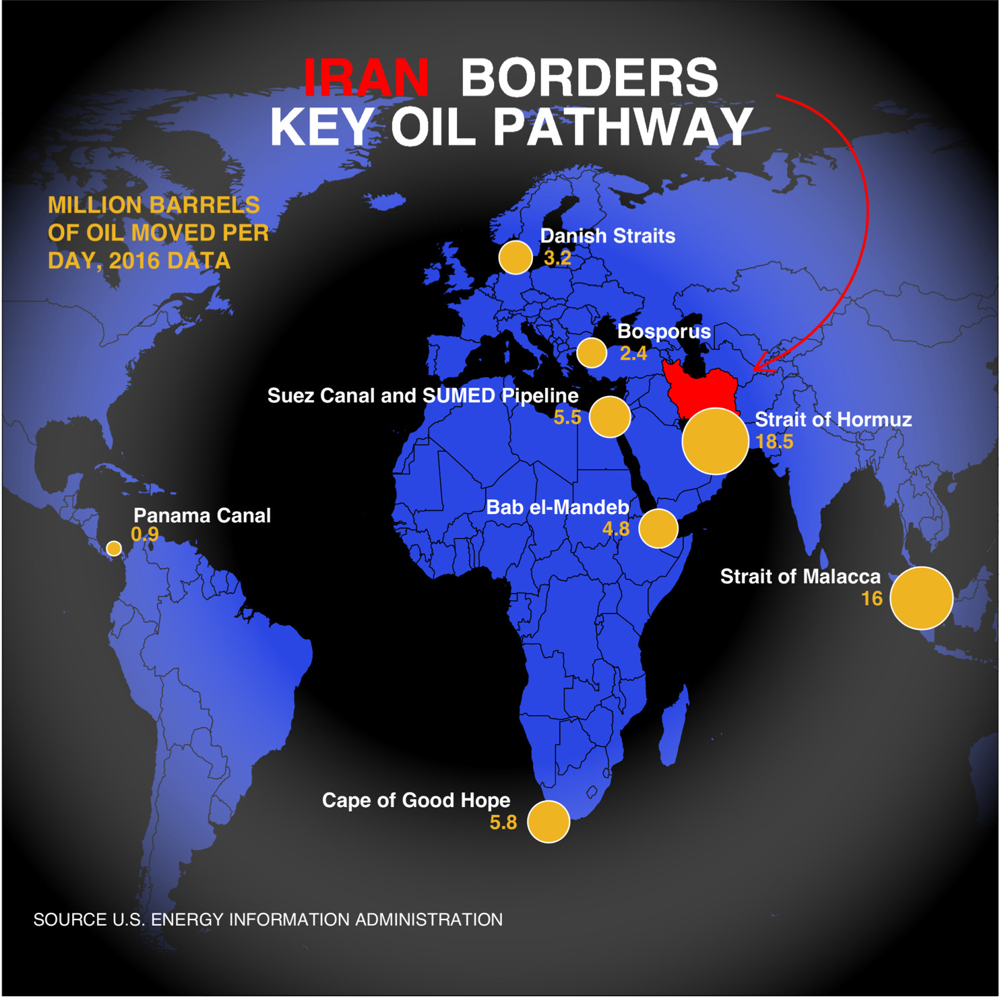

Early last year I posted on my blog an attempt to recreate a Yahoo Finance graphic. Now, thanks to the work of Dr Paul Murrell on the grid and gggrid packages, I have the tools to polish this one off. Reference Article
Here is a streamlined version of my earlier post, and the graphic enhanced by the radial gradient feature.

library(tidyverse)
library(sf)
library(rnaturalearth)
library(rnaturalearthdata)
library(ggtext)
library(grid)
library(gggrid)Will cut right to the chase this time. Here are the data elements we need for the map and the points on the map.
world <- ne_countries(scale = "medium", returnclass = "sf")
data <- data.frame(Location = c("Strait of Hormuz", "Strait of Malacca",
"Suez Canal and SUMED Pipeline", "Bab el-Mandeb", "Danish Straits",
"Bosporus", "Panama Canal", "Cape of Good Hope"),
Barrels = c(18.5,16, 5.5, 4.8, 3.2, 2.4, 0.9, 5.8),
Lat = c(26.5667, 1.43, 30.455, 12.5833, 56, 40.7225, 9.38743, -34.3548),
Lon = c(56.25, 102.89, 32.35, 43.3333, 11, 28.2247, -79.91863, 18.4698))Note the limitations on the graphic devices that can be used. Here I will use cairo_ps to save the output locally as a postscript file. The additions to achieve the radial gradient are grid::radialGradient() and gggrid::grid_panel().
# Not Run
#cairo_ps(filename = "plot2.ps")
#grad <- radialGradient(c("transparent", "black"), r2=.6, stops = c(.45, 1), extend = "pad")
#title <- "<b style='color:#FF0000'>IRAN</b> <b style='color:#FFFFFF'>BORDERS<br> KEY OIL PATHWAY</b>"
#ggplot(data = world) +
# geom_sf(fill = "#2B47E3", color = "black", size = 0.2) +
# grid_panel(rectGrob(gp=gpar(fill=grad))) +
# geom_sf(data = subset(world, geounit == "Iran"), fill = "red", color = "black", size = 0.2) +
# geom_point(data = data, aes(x =Lon, y=Lat, size = Barrels),
# shape = 21, fill = "goldenrod2", color = "white", show.legend = F) +
# geom_text(data = data, aes(x =Lon, y=Lat, label = Location), color = "white", size = 3.5,
# vjust = c(-1, -1, -1, -1, -1, -1, -1.8, -1), hjust = c(-0.25, 1.25, 1.1, 1.2, -0.18, -0.27, -0.14, 1.2),
# fontface = "bold") +
# geom_text(data = data, aes(x =Lon, y=Lat, label = Barrels), color = "goldenrod2", size = 3.5,
# vjust = c(.5, .5, .5, .5, .5, .5, -.5, .5), hjust = c(-1.0, 2.7, 2.0, 2.0, -1.0, -1.0, -0.6, 2.1),
# fontface = "bold") +
# scale_size_continuous(range = c(3, 15)) +
# annotate("text", x = -95, y = 60, label = "MILLION BARRELS\nOF OIL MOVED PER\nDAY, 2016 DATA", size = 4.0,
# color = "goldenrod2", fontface= "bold", hjust = 0, lineheight = 1) +
# annotate("text", x = -45, y = -50, label = "SOURCE U.S. ENERGY INFORMATION ADMINISTRATION", size = 3.0,
# color = "white")+
# geom_richtext(x = 10, y = 80, label = title, size = 9, fill = NA, label.color = NA, lineheight = 0.33) +
# geom_curve(aes(x = 70, y = 82, xend = 65, yend = 38), color = "red", arrow = arrow(type = "open",
# length = unit(0.15, "inches")), curvature = -0.75, angle = 100, ncp =10) +
# theme(panel.background = element_rect(fill = "black"),
# panel.grid = element_blank(), axis.title = element_blank(), axis.ticks = element_blank(),
# axis.text = element_blank(), aspect.ratio = 1) +
# xlim(-95.00, 110.00) +
# ylim(-55, 90)
#dev.off()